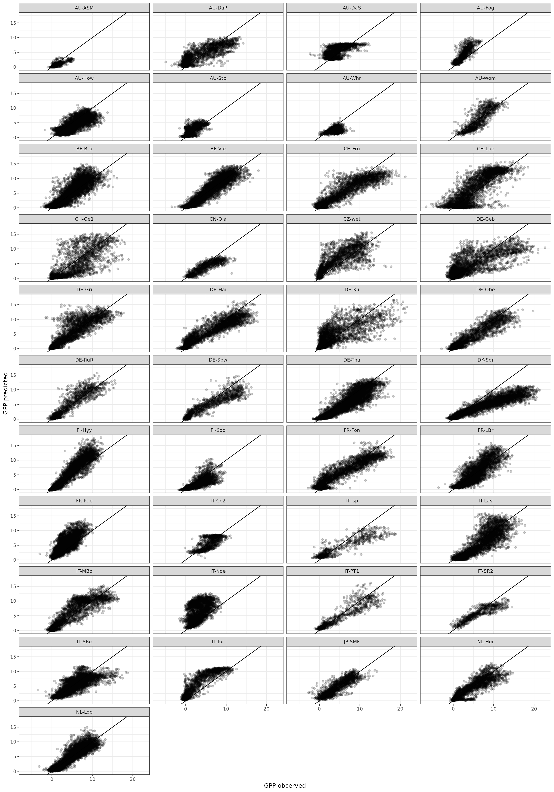
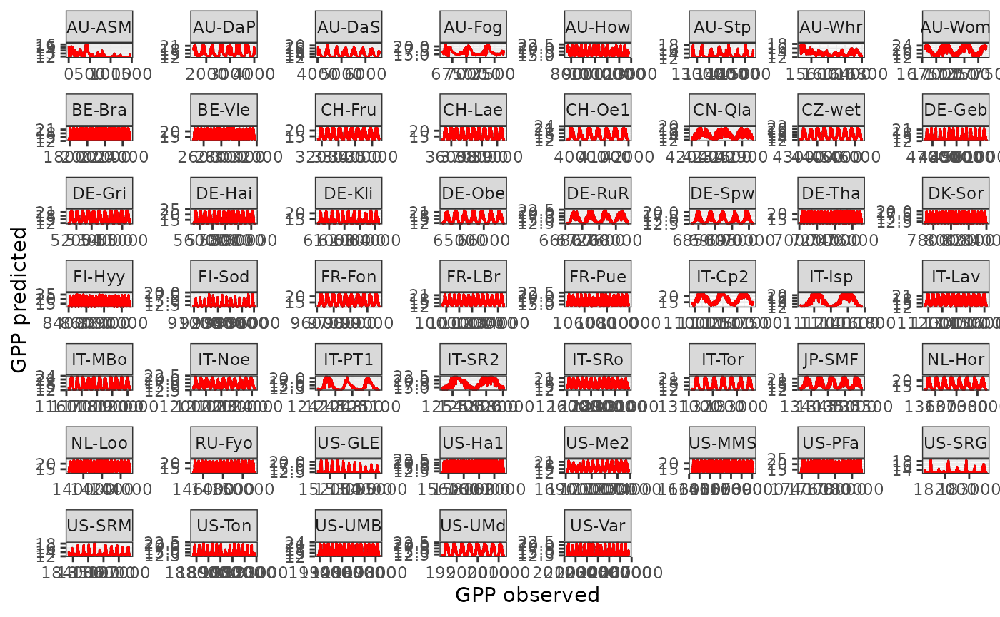

Results
Koen Hufkens
01_results.RmdSummary results / stats… on a 20 epoch run…
# read in the modelled data
df <- readRDS(here::here("data/leave_site_out_output.rds"))
# read in the original data
orig <- readRDS(here::here("data/df_imputed.rds"))
# join data
df <- left_join(df, orig) |>
mutate(
date = as.Date(date)
)## Joining with `by = join_by(sitename, date)`
# R squared and RMSE global
statistics_global <- df |>
summarize(
R2 = summary(lm(GPP_pred ~ GPP_NT_VUT_REF))$r.squared,
RMSE = sqrt(mean((GPP_pred - GPP_NT_VUT_REF)^2, na.rm = TRUE)),
MAE = abs(mean((GPP_pred - GPP_NT_VUT_REF), na.rm = TRUE))
)
print(statistics_global)## R2 RMSE MAE
## 1 0.7468109 2.002095 0.05911994
# R squared and RMSE by site
statistics_sites <- df |>
group_by(sitename) |>
summarize(
R2 = summary(lm(GPP_pred ~ GPP_NT_VUT_REF))$r.squared,
RMSE = sqrt(mean((GPP_pred - GPP_NT_VUT_REF)^2, na.rm = TRUE)),
MAE = abs(mean((GPP_pred - GPP_NT_VUT_REF), na.rm = TRUE))
)
print(statistics_sites)## # A tibble: 53 × 4
## sitename R2 RMSE MAE
## <chr> <dbl> <dbl> <dbl>
## 1 AU-ASM 0.624 0.682 0.204
## 2 AU-DaP 0.681 2.46 1.05
## 3 AU-DaS 0.528 2.49 1.96
## 4 AU-Fog 0.568 2.66 2.39
## 5 AU-How 0.475 1.89 0.0428
## 6 AU-Stp 0.602 1.13 0.594
## 7 AU-Whr 0.0213 2.04 1.36
## 8 AU-Wom 0.764 2.59 1.49
## 9 BE-Bra 0.811 1.57 0.553
## 10 BE-Vie 0.840 1.56 0.114
## # ℹ 43 more rows
